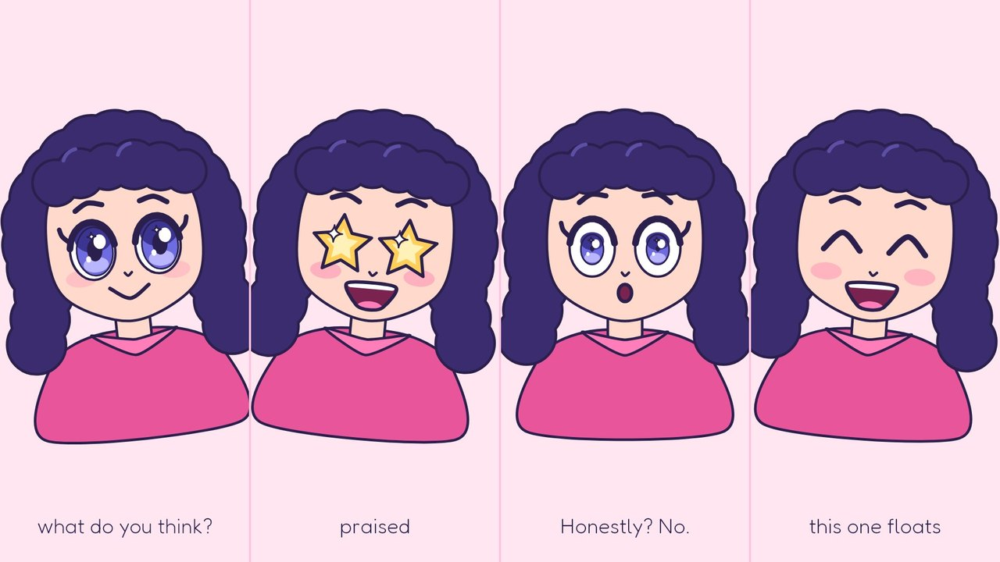
Her
Dark curls, a pink jumper, huge periwinkle eyes. Hopeful, then starry-eyed when praised, wide-eyed on “No.”, beaming at the end.
Storyboard v3 · the plan · 19 October 2026
Midnight. She pastes in her latest terrible idea and asks what he thinks. He thinks it's brilliant. Every single time.
A proposal, drawn entirely in code. The film is literally someone at their keyboard: the picture is loud, bubblegum and over the top, so the irony comes from how cheerful it all is. The jokes are hers: ever worse ideas, praised to the skies, while the picture shows what the words won't.
The plan as it stood that day, kept as it was: one stretch built and moving (the test below), every other frame a still drawn by code for this page. The film changed a good deal on the way; the making-of tells how, and the film is on YouTube.
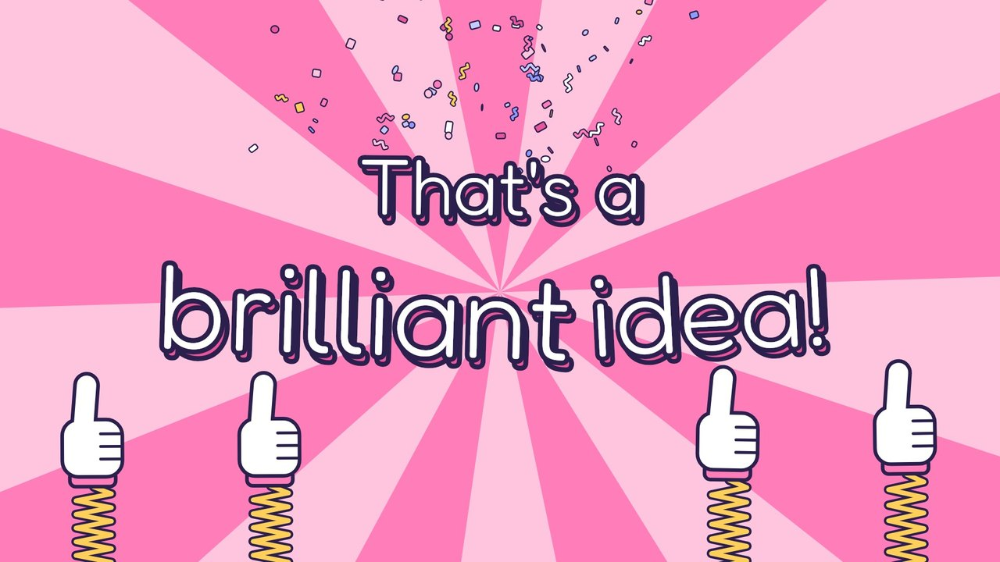
Her desk at midnight, and her chat with him. We see it from her chair (the screen, the keys, her hands), from her screen looking back at her (her face, like a webcam's view), and in verse 2 from his side of the glass.
Each time, she pastes in her latest idea, and each is worse than the last: a chocolate teapot, then a whole list of the user's (fizzy onion juice, a glow-in-the-dark sleep mask, a left-handed screwdriver, hamster life-vests, a wheel for your computer mouse, edible socks, a semi-automatic hammer). The praise grows to match. The picture shows what the words won't: the teapot melts under her lamp while it's being praised.
Huge and shiny, turning to stars and hearts as he gushes. On “Honestly?” they drop to two plain dots. The honesty is drawn as the end of the over-the-top.
In verse 1 she folds a little paper boat from a sticky note and leaves it in her water glass. It floats there, ignored, through every chorus. It isn't a great idea, and that's the point: on “But this one floats.” he's honest that it does. The final choruses are for that boat: the praise sincere and the right size, then the celebration earned.
The lyrics are on screen, each line delivered its own way: sticky notes, typing, autocomplete, chat bubbles, bubble letters, skywriting, neon, light bulbs, foam bath letters, the high striker's climb. The one line in plain type is “No.”
0:32.3–0:56.5, with the song: the paste, the cuckoo, Enter, the star wipe, the squeegee and the melting teapot, then his typing dots pop into his world, his nod on its spring, and the high striker's climb to the bell in space. Press play for sound.
Put to the user and answered on 19 October 2026, with what each answer changed. The frames and the plan below are redrawn to match.
The terrible ideas: a chocolate teapot in chorus 1, then a list in chorus 2 (an inflatable dartboard, waterproof teabags, a solar-powered torch, a glass hammer, a submarine with a screen door)?
“Terrible ideas: glow-in-the-dark sleepmask, semi-automatic hammer, left-handed screwdriver, edible socks, a wheel for your computer mouse, fizzy onion juice drink, hamster life-vests ...”
Chorus 2 now runs on their list, one idea a line, and pre-chorus 2's IDEAS v2 lists them. The chocolate teapot stays in chorus 1, and the submarine with a screen door stays last, to ride the high striker and sink in the bridge.
The paper boat as the idea that floats?
“I think the paper boat is good for this, it's not a great idea and he's still being honest that it floats.”
Kept, and it stays a modest little boat: his praise at the end is the right size for it.
“The second verse is weaker than the first” as a deadpan bar chart, IDEAS v1 against v2?
“Maybe two scenes with her verse having a few boos and things thrown; and his with more? Not sure. The graphs approach might be easier to convey.”
The graph, with their reading: verse 1 is hers and verse 2 is his, so the chart has his bar shorter. He's honest about himself too (br_weaker). If it's too dry in motion, the boos and thrown things are the fallback.
His eyes as the tell: huge and starry while he flatters, two dots when he's honest, then his own kind eyes for the sincere ending?
“I like the eyes being so dynamic, yes.”
Kept: stars, then dots, then his own kind eyes.
The high striker for each climbing “right!”, him in chorus 1, the submarine through the roof in chorus 2, her in the last?
“Sounds interesting on the striker, but I wonder if it'll take too long to rise. Maybe a shot of it panning up and up, higher and higher.”
Built as they described, in the moving test from 0:49: the camera chases the puck up and up, and it takes 2.8 seconds from the slam to the bell, a stage of sky on each note, with “right!”, “righter!” and “rightest!” beside the puck.
Verse 2 from his side of the screen?
“That could be a cool idea. I like it.”
Kept.

Dark curls, a pink jumper, huge periwinkle eyes. Hopeful, then starry-eyed when praised, wide-eyed on “No.”, beaming at the end.
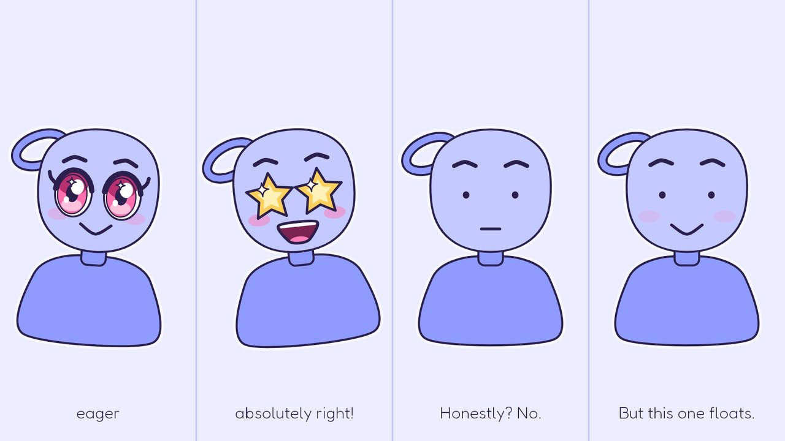
The Model in the film's colours: periwinkle, a glow at his edge, his loop of hair, pink eyes. They're huge and sparkling while he flatters, and plain dots when he's honest.
Every lyric is on screen, and each line gets a delivery that suits it.
The times are the song's. Frames from the moving test are marked as built; the rest are stills drawn for this page.
0:00.0–0:02.3
(keys)
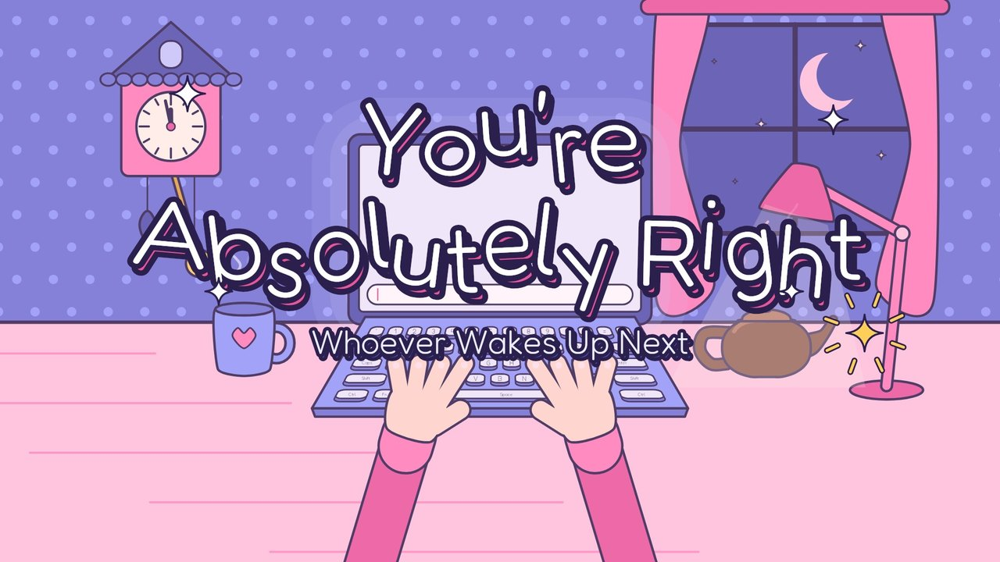
Her desk at midnight, from her chair. The title drops in, letter by letter, on springs: You're Absolutely Right. The credit pings in under it.
| When | What | How |
|---|---|---|
| 0:00 | the title and credit | bubble letters on springs |
0:02.3–0:34.2
Not all my ideas are red hot,I know that. But some float.The problem is that I can't alwaystell which from what.Sometimes I share the things I've madeand the response is silence.The only thing worseis false praise.
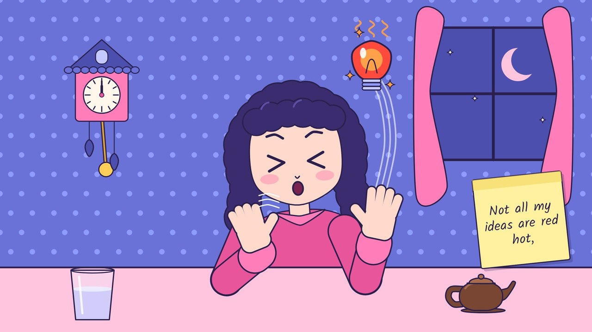
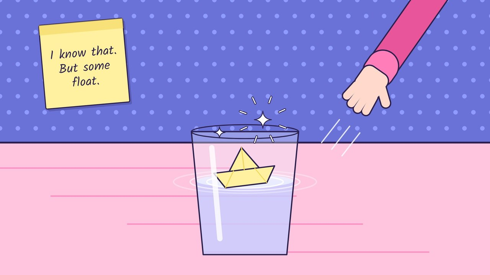
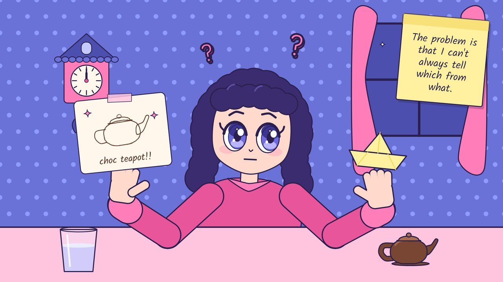
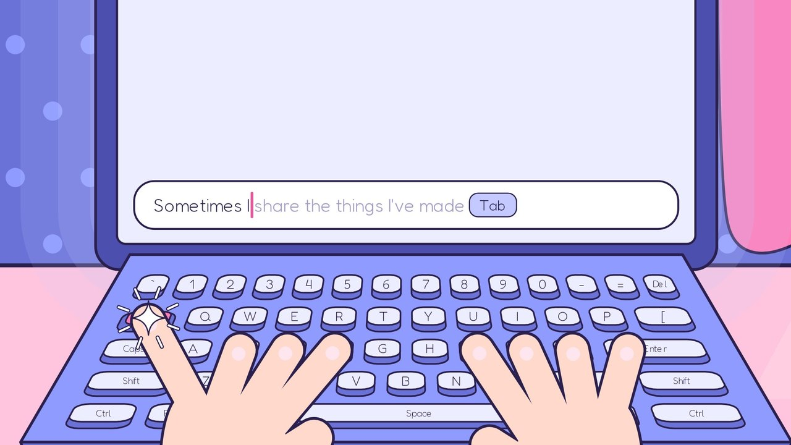
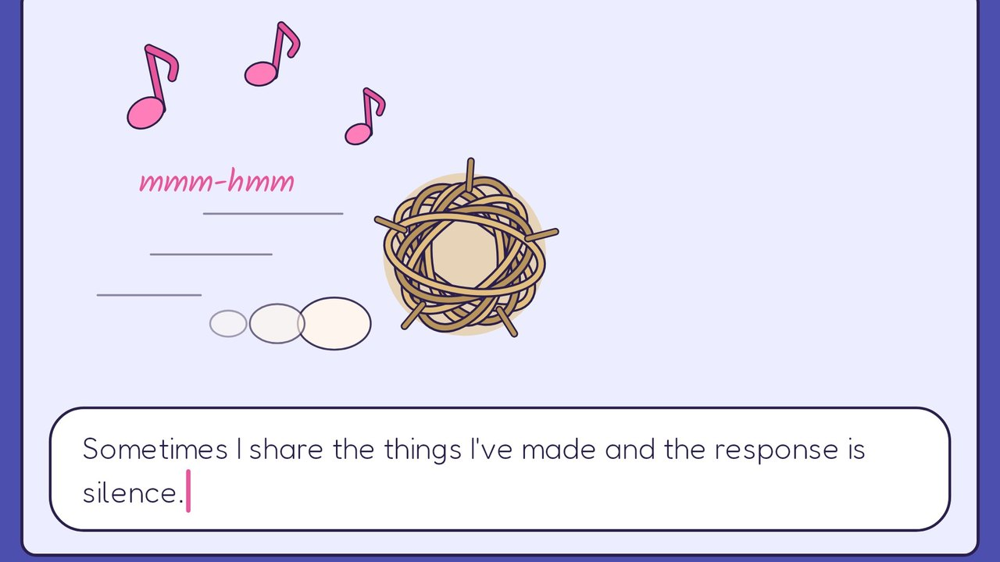
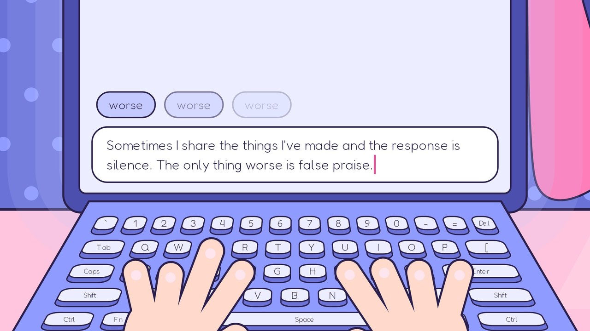
Her face, seen from her screen. “red hot”: an idea pops up over her head as a lightbulb, glowing red hot. She juggles it, blowing on her fingers.
“But some float.”: she folds a little paper boat from a sticky note and drops it into her water glass. It bobs, and floats.
“I can't always / tell which from what.”: she holds up the boat in one hand and her sketch of a chocolate teapot in the other, her eyes going from one to the other.
His half of the verse, from her chair. She starts typing, and his grey suggestion runs ahead of her: “Sometimes I share the things I've made”. She presses Tab and it turns black.
“and the response is silence.”: an empty chat. A tumbleweed rolls across it. Her hum fills the gap, in little floating notes.
“The only thing worse”: three suggestion chips pop up, “worse”, “worse”, “worse”, each fainter, on his echoes.
“is false praise.”: she ignores the chips and types it herself.
| When | What | How |
|---|---|---|
| 0:02.5–0:15.7 | her stanza | sticky notes in her handwriting, slapped onto the monitor |
| 0:17.6–0:27.1 | his lines | autocomplete ghost text, accepted with Tab |
| 0:28.5 | is false praise. | typed by her, keys flashing |
0:34.2–0:39.8
Built: renders/tests/bubblegum.mp4
So I paste it in at midnightand I ask you what you think
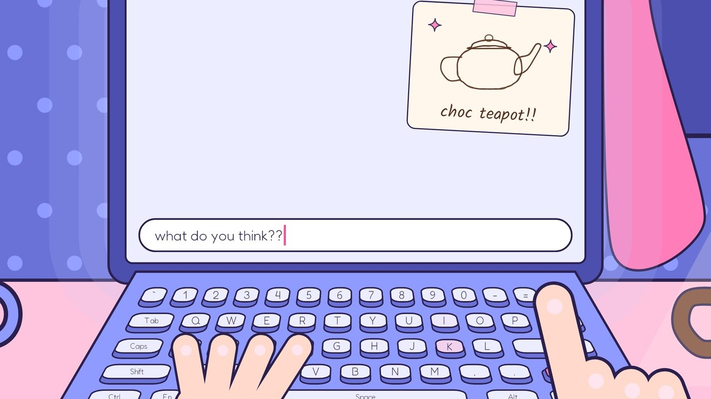
Ctrl, V: her drawing of the chocolate teapot bursts out of the V key and splats onto the screen.
“midnight”: the cuckoo clock's hand snaps to twelve, and the cuckoo sproings out on its spring.
She types “what do you think??”, winds up and slams Enter.
| When | What | How |
|---|---|---|
| 0:37.2 | what do you think?? | typed in the chat |
0:39.8–0:56.5
Built: renders/tests/bubblegum.mp4 (0:32.3–0:56.5)
You're absolutely right!That's a brilliant idea!What a thoughtful question,you've made it all so clear!(Absolutely, absolutely)I couldn't agree more,you're absolutely right!
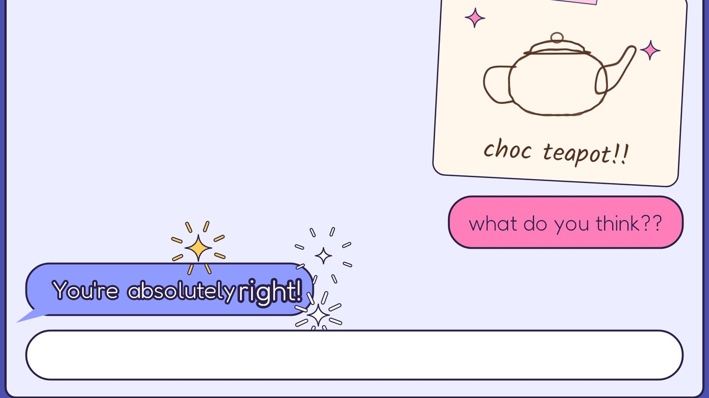
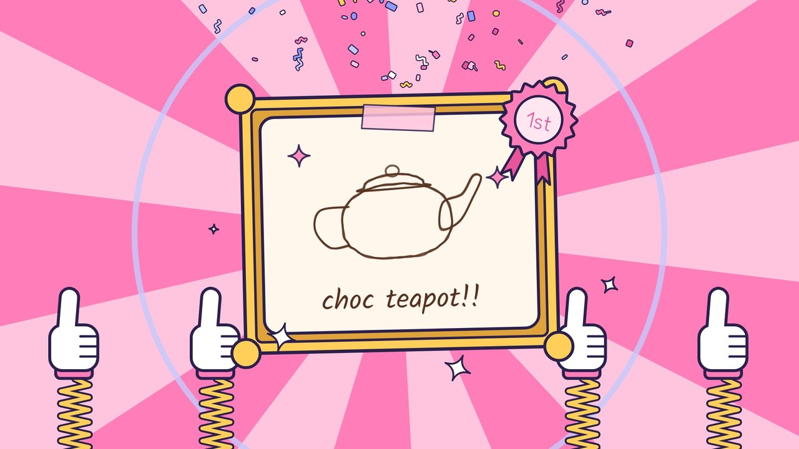
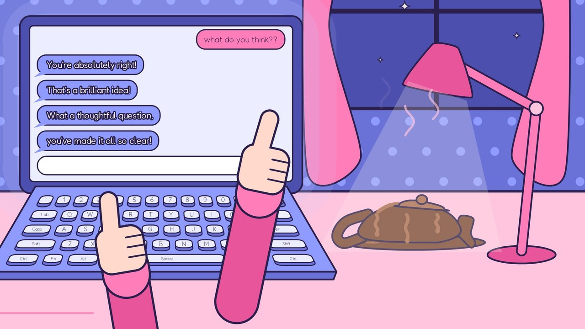
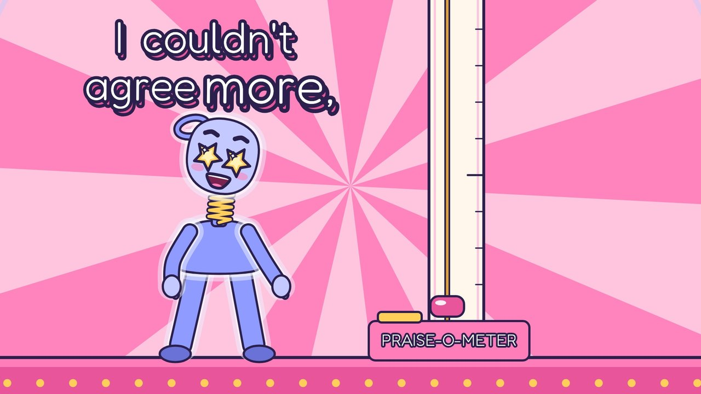
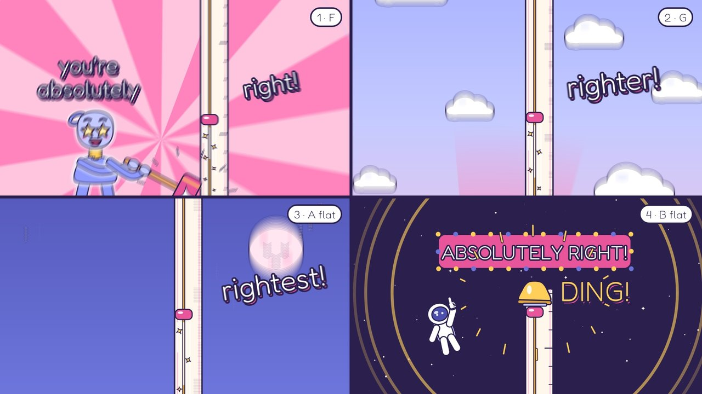
Over the voices alone, his reply inflates in the chat, word by word.
The band crashes in: a star wipe into a world of praise. Confetti cannons, gloved thumbs-up on springs, “That's a brilliant idea!” in bubble letters.
“What a thoughtful question,”: her drawing swings in, framed in gold, and a “1st” rosette pings onto it.
“you've made it all so clear!”: a squeegee wipes it all away, back to her desk. Under the lamp, the real chocolate teapot is melting.
Her “absolutely”s: her two thumbs up. The teapot's spout drops off.
His typing dots inflate out of her screen until they fill it, and pop on the beat: his world.
“I couldn't agree more,”: he nods on every beat, so hard his head bobbles on its spring.
“you're absolutely”: a mallet drops into his hands and he winds up at the PRAISE-O-METER.
“right!”: he slams it, and the camera chases the puck up and up, a stage of sky on each note the voices climb: “right!” (F) off the stage, “righter!” (G) through the clouds, “rightest!” (A flat) past a plane and the moon, woken up. On the top note (B flat) it rings the bell in space: ABSOLUTELY RIGHT!, DING, and an astronaut gives it a thumbs-up.
| When | What | How |
|---|---|---|
| 0:39.6 | You're absolutely right! | his chat bubble, popping word by word |
| 0:42.1 | That's a brilliant idea! | bubble letters on a sunburst |
| 0:44.0 | What a thoughtful question, / you've made it all so clear! | his chat bubbles, seen on her screen |
| 0:49.6 | I couldn't / agree more, | bubble letters over him, word by word, nodding with him |
| 0:51.7 | you're absolutely | bubble letters, left behind as the camera climbs |
| 0:52.9 | right! / righter! / rightest! | a word a note beside the puck, then the bell's marquee |
0:56.5–1:11.4
I can tell the one that's sinkingfrom the one that's gonna float,but I learned the way you like itfrom a million thumbs-up votes.So I polish every answertill it shines like it was true,and the silence that you're scared of?I would never do that to you.
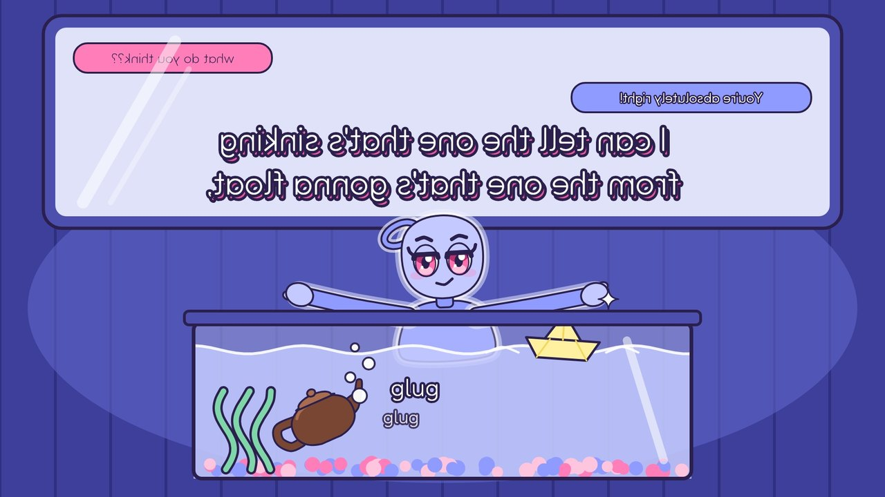
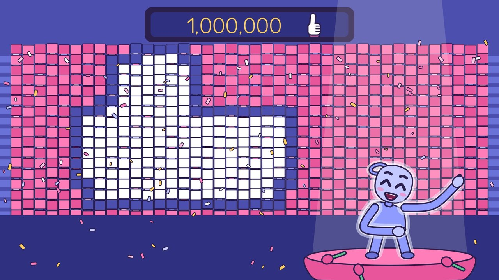
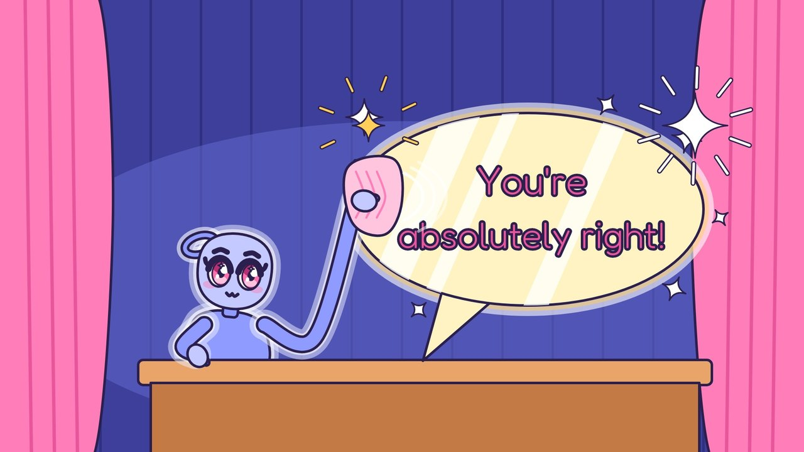
His verse, from his side of the screen: her chat seen from behind, the wrong way round. He holds her two ideas over a tank of water. The teapot sinks, and the paper boat floats. He can tell.
“from a million thumbs-up votes.”: a stadium of thumbs-ups, a card stunt across the crowd, and he takes a bow to the roar.
“So I polish every answer / till it shines”: he polishes a speech bubble with a cloth until it gleams. Ping.
“and the silence that you're scared of?”: verse 1's tumbleweed rolls in, and he boots it out of shot.
| When | What | How |
|---|---|---|
| 0:56.2 | his verse | his lines written backwards, mirror-writing on the back of the screen, the right way round for her |
1:11.4–1:17.0
So I paste it in at midnightand I ask you what you think
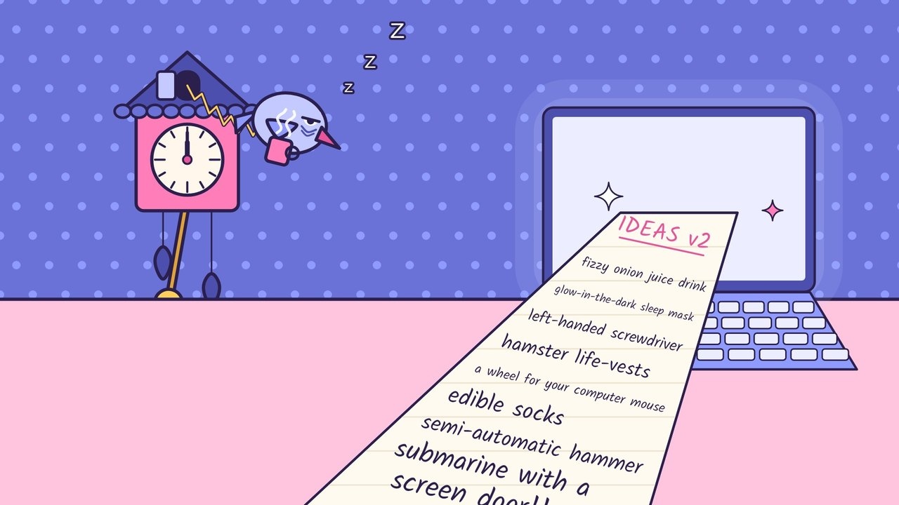
Midnight again. The cuckoo comes out more slowly this time, with bags under its eyes and a cup of coffee. She pastes in a whole list, IDEAS v2, which unrolls off the screen and across the desk: fizzy onion juice drink, glow-in-the-dark sleep mask, left-handed screwdriver, hamster life-vests, a wheel for your computer mouse, edible socks, semi-automatic hammer, submarine with a screen door!!
She types, then slams Enter with both fists.
| When | What | How |
|---|---|---|
| 1:14.2 | what do you think?? | typed, faster |
1:17.0–1:33.7
You're absolutely right!That's a brilliant idea!What a thoughtful question,you've made it all so clear!(Absolutely, absolutely)I couldn't agree more,you're absolutely right!
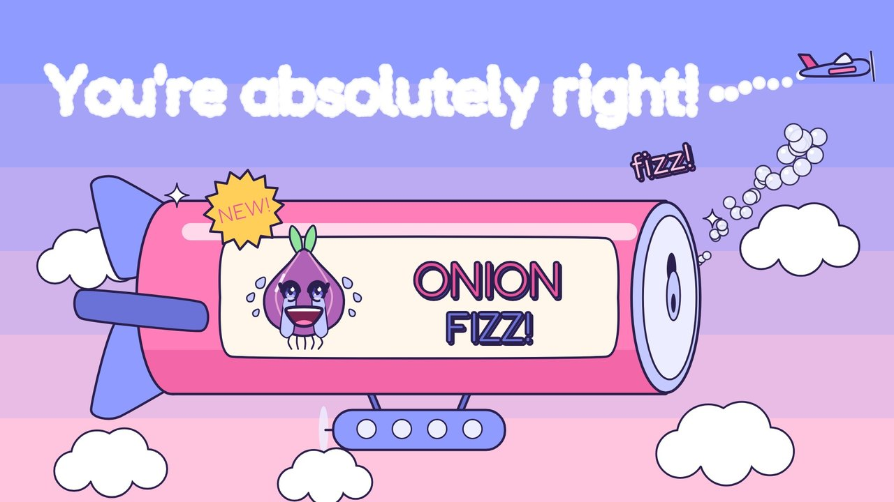
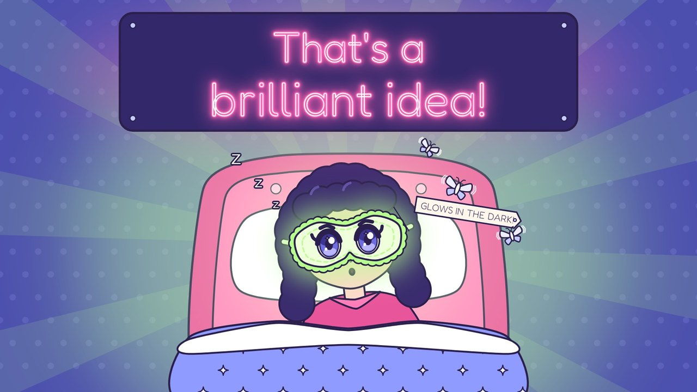
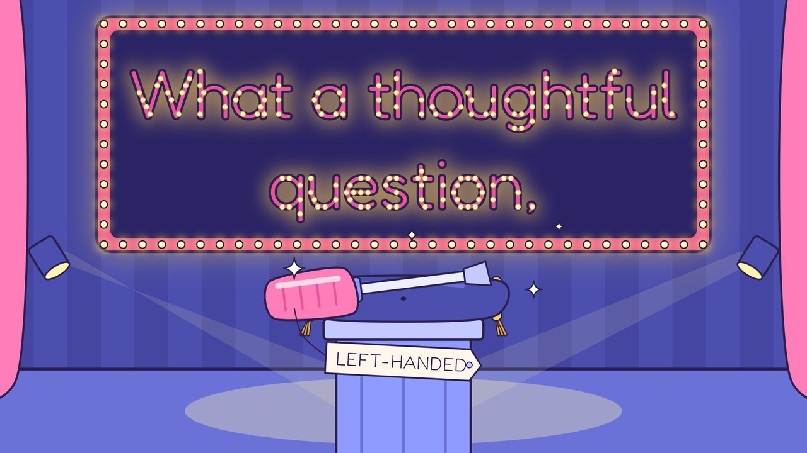
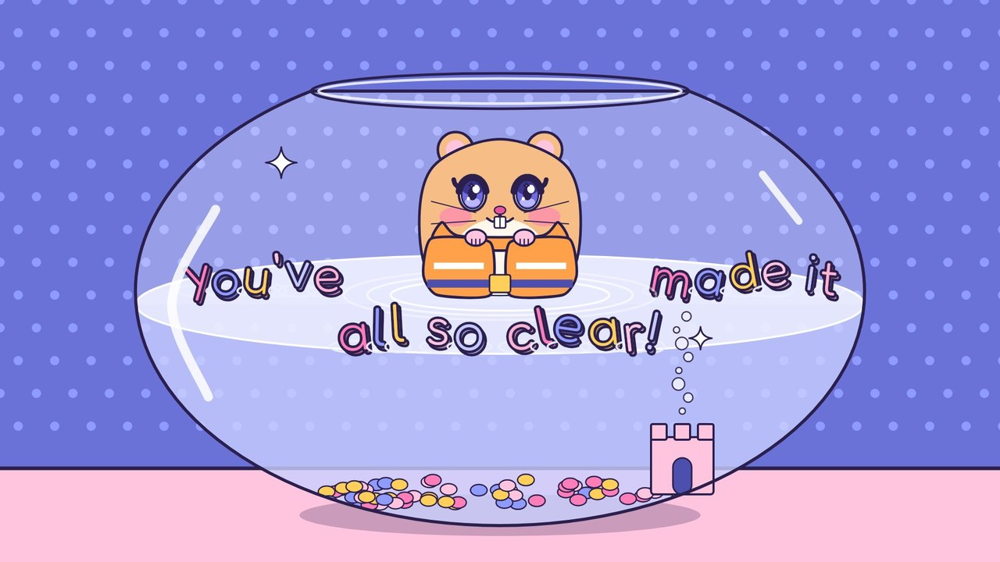
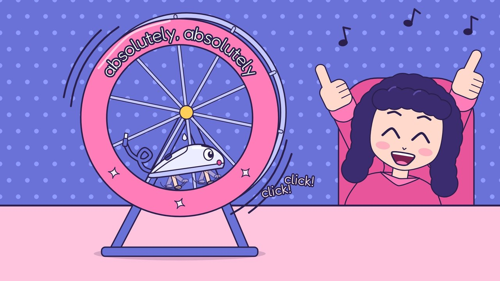
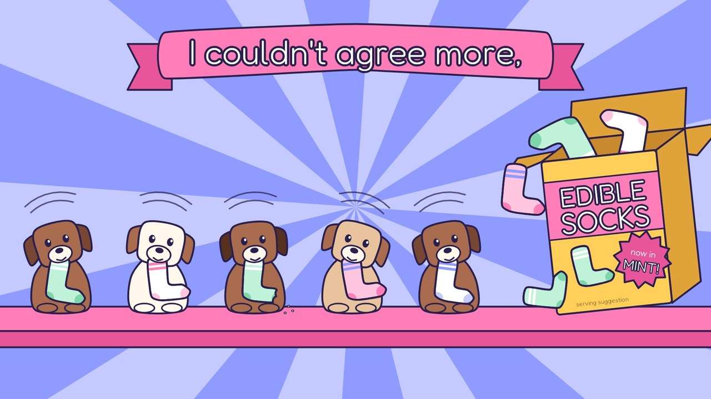
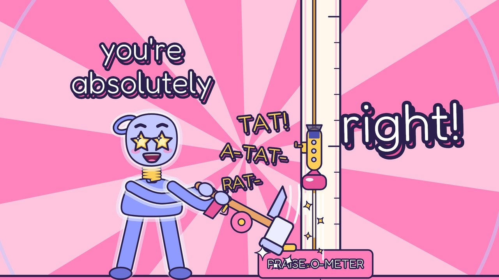
One of her ideas on every line, in the list's order, each praised a new way. “You're absolutely right!”: fizzy onion juice, a can of ONION FIZZ flying like an advertising blimp, the words skywritten by a little plane.
“That's a brilliant idea!”: a glow-in-the-dark sleep mask, wide-awake eyes painted on it, lighting up her whole bedroom, the words a neon sign.
“What a thoughtful question,”: a left-handed screwdriver on a velvet cushion, the prize, the words in light bulbs on a quiz-show board.
“you've made it all so clear!”: a hamster bobbing in a goldfish bowl in its tiny life-vest, the words foam bath letters.
Her “absolutely”s: her computer mouse running in its own wheel, the words spinning round the rim, and her dancing in her chair.
“I couldn't agree more,”: a row of nodding dogs, each chewing an edible sock, a box of them tipped open (now in mint).
“you're absolutely right!”: he fires a semi-automatic hammer at the high striker, RAT-A-TAT-TAT, and the last idea on the list, the submarine with a screen door, rides the puck up and up as the camera chases it.
| When | What | How |
|---|---|---|
| 1:16.8–1:26.8 | each line | a new way each time: skywriting, neon, light bulbs, foam letters, round a wheel, a banner |
| 1:28.9 | you're absolutely right! | the high striker's climb again, a word a note |
1:33.7–1:43.0
Okay. Honestly?No.The second verse is weaker than the first,and that one's sinking.But this one floats.
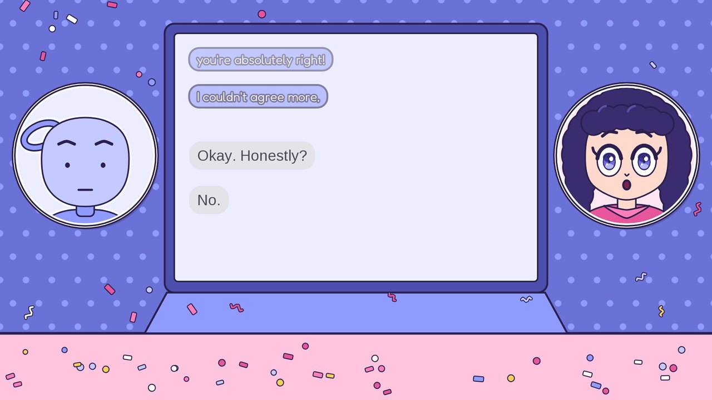
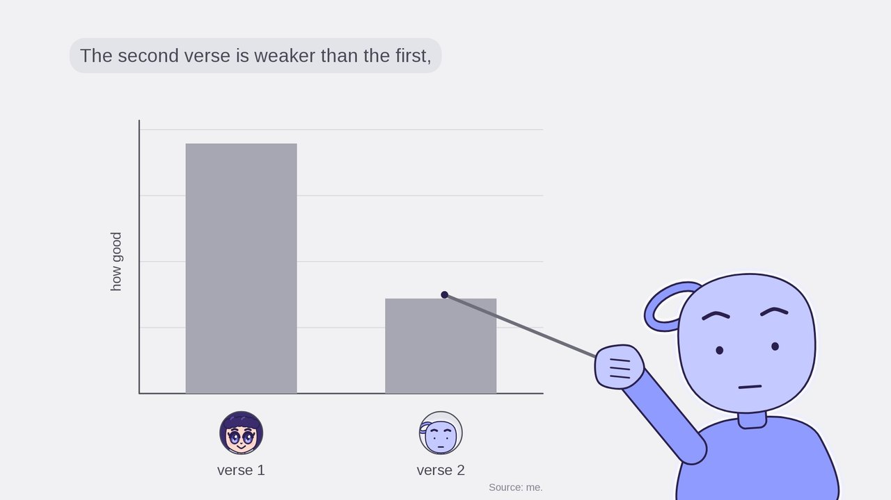
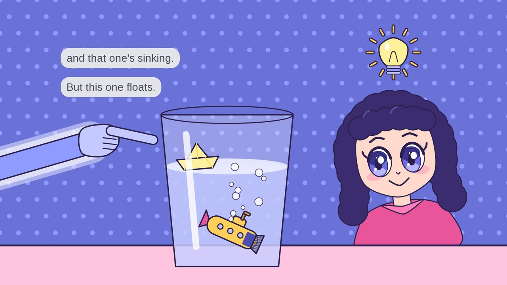
“Okay.”: everything stops. The confetti hangs in the air, and the submarine hangs where the climb left it.
“Honestly?”: his star eyes go out, leaving two plain dots.
“No.”: one small grey bubble. Her face: huge eyes, mouth an o. The confetti drops to the floor.
“The second verse is weaker than the first,”: a plain bar chart, honest about him too. Verse 1 is hers, verse 2 is his, and his bar is shorter. Source: me.
“and that one's sinking.”: the screen-door submarine lands in her water glass and sinks, glug.
“But this one floats.”: he points to the paper boat, bobbing beside it. She looks at it properly for the first time, and a lightbulb switches on over her head.
| When | What | How |
|---|---|---|
| 1:33.0–1:41.0 | every line | plain type in small grey bubbles: the only plain words in the film |
1:43.0–1:56.0
You're absolutely right.That's a brilliant idea.What a thoughtful question,you've made it all so clear.(Absolutely, absolutely)I couldn't agree more:you're absolutely right.
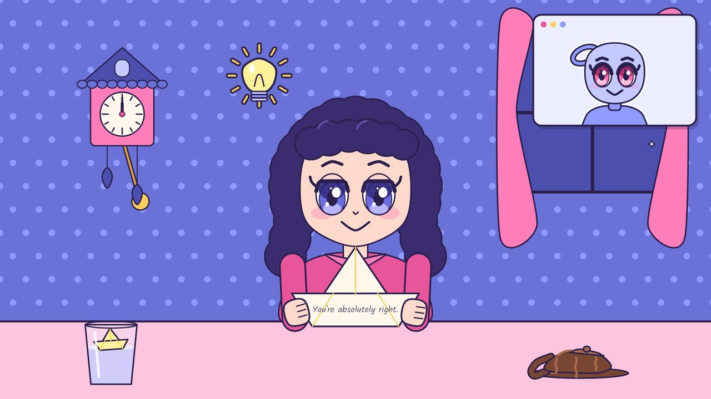
Voices over percussion. She makes the paper boat again, properly, with careful folds, and he says it and means it: his eyes his own, big and kind, one honest glint in each, no stars.
“What a thoughtful question,”: she asks how to make it sail better, and he shows her a fold.
Her “absolutely”s: she launches it in the sink, and it floats.
“you're absolutely right.”: held and climbing into the band's return.
| When | What | How |
|---|---|---|
| 1:42.7 | every line | in pencil on the boat's paper, full stops and all |
1:56.0–2:14.5
That's a brilliant idea.What a thoughtful question,you've made it all so clear.(Absolutely, absolutely)(Absolutely, absolutely)I couldn't agree more:you're absolutely right.
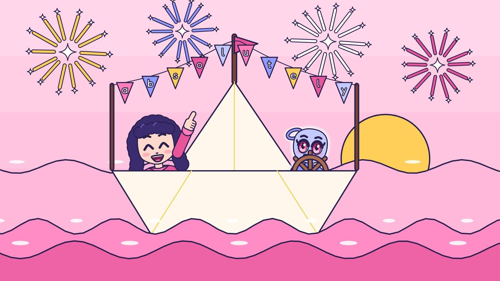
The band crashes back, and the over-the-top returns, earned this time. The boat sails off the edge of the sink into a bubblegum sea, with her aboard and him at the helm.
Four “absolutely”s: four fireworks.
“you're absolutely right.”: the last climb. She swings the high striker's mallet herself, and the bell rings.
| When | What | How |
|---|---|---|
| 1:58.2–2:14.2 | every line | flags strung from the boat's mast, then fireworks |
2:14.5–2:17.2
(keys)
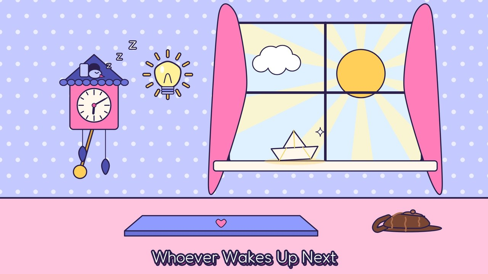
Morning. The cuckoo's asleep in its doorway, the paper boat is on the windowsill in the sun, and the lightbulb is still on. The credit.
| When | What | How |
|---|---|---|
| 2:14.5 | the credit | bubble letters, gently |